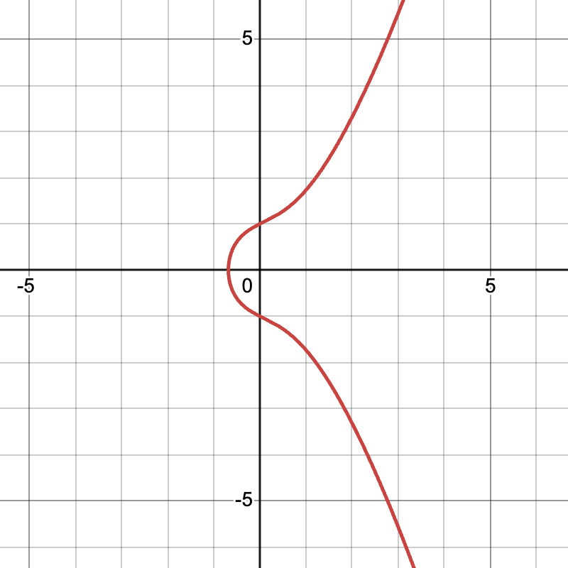
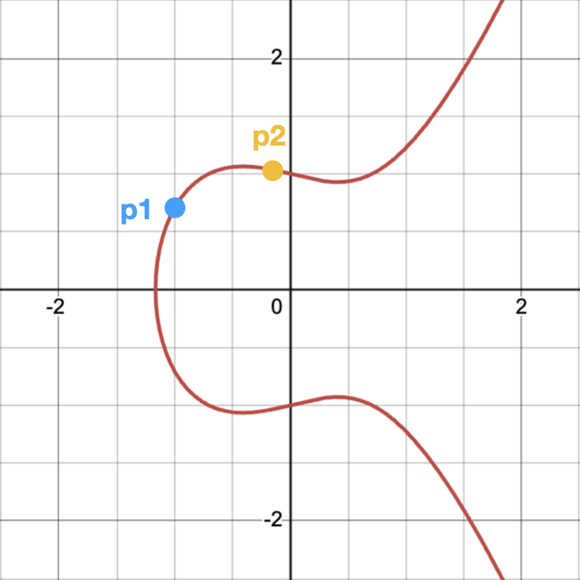
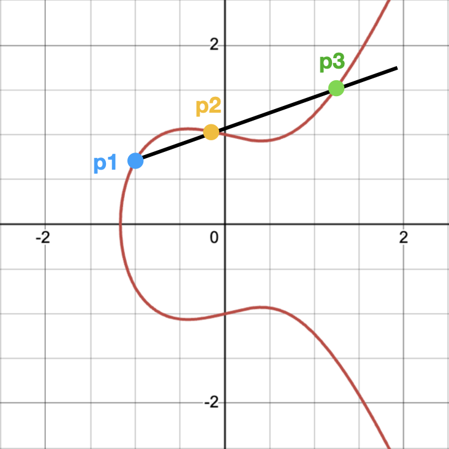
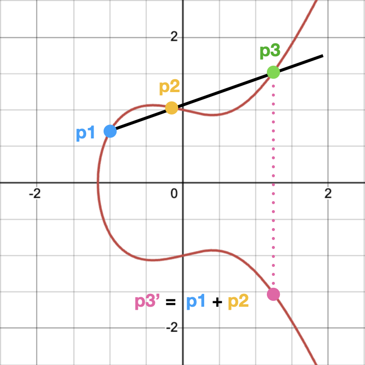
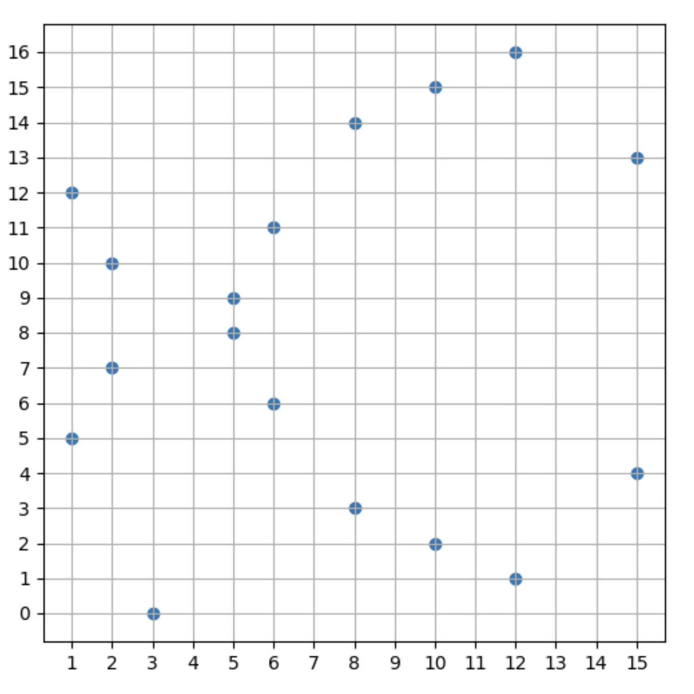
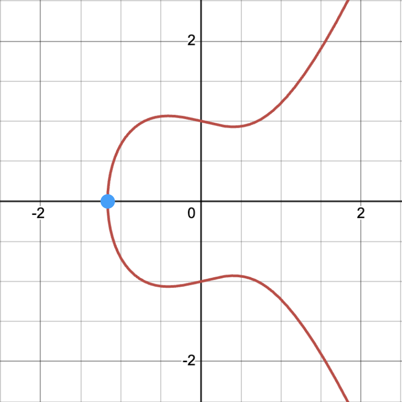
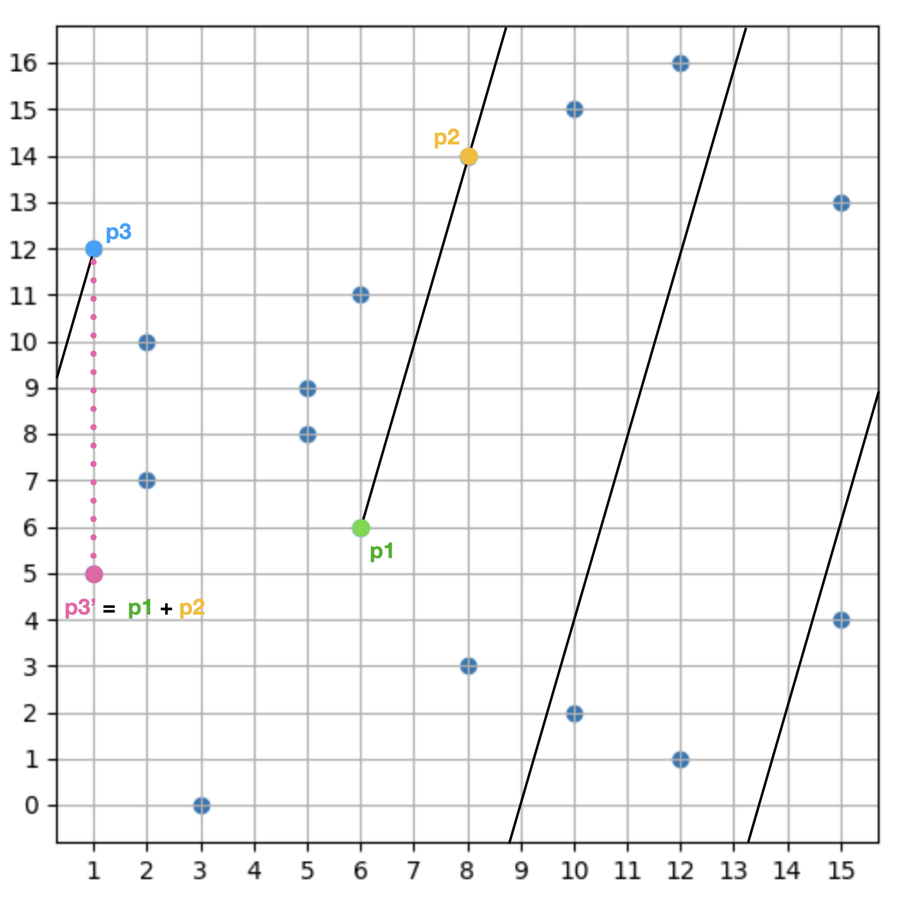

Private-Public Key Encryption in Ethereum
An attempt to simplify and breakdown what they are and how they work together in the context of Ethereum.
Brief Context
There are 2 types of accounts in Ethereum; externally owned accounts (EOA) and smart contract accounts. To give you a quick 1-liner for each, EOAs are accounts that can perform basic transactions, whereas smart contract accounts contain code that can be executed and can hold storage.
They are similar in which they both can hold a balance of ETH, but are different in which only EOAs can initiate transactions on the network, whereas smart contract accounts cannot initiate transactions themselves. They need to be called from an EOA or another smart contract that was in turn executed by an EOA.
Since EOAs initiate all the action on the network, they need to be secured. In other words, only the person who is allowed to perform actions with that EOA should be able to do so. We’ll explore how this is achieved through Private-Public Key Encryption.
Every EOA has an address which is publicly available, since anyone can send ETH to that particular address. How is this public address generated? And how is it related to Private and Public Keys?
What is a Private Key?
A Private Key, is a randomly generated 2256 bit number. Which is basically an integer with 78 digits. Why is it 2256 bits? That’s the defined address space in Ethereum. To give you an idea of how large that number is, the estimated total number of atoms in the universe is 1082, an integer with 83 digits. As you can see, the likeliness of a collision or running out of addresses is extremely low (practically impossible) when generated truly randomly.
A key thing to note here, is that the number needs to be truly randomly generated, otherwise someone else will likely “randomly” generate the same key. That job is mainly delegated to industry standard cryptography libraries. It is quite discouraged to implement your own random generator.
Ok great, now we know what the Private Key is (a randomly generated large number) what is the Public Key? And how is it related to the Private Key?
What is a Public Key?
Well, the Public Key is generated from the Private Key. It is different from the public address, the public address is generated from the Public Key. We’ll briefly touch on this step as well in a later section.
However since the Public Key is (as you may have guessed) public, how do we make sure that the Private Key cannot be calculated or generated from the Public Key?
There are 2 properties needed in order to achieve this:
- Generating a Public Key from a Private Key is only one way. In other words, it is impossible to compute it the other way around.
- Generating the Public Key from the Private Key always results in the same Public Key. There can only be one Public Key that is associated with the Private Key.
Introducing Elliptic Curves
Note: I will be using TTM (Trust The Math) quite a bit in the following section.
Elliptic Curves are mathematically defined as equations in the following format: y2 = x3 + ax + b. When plotted on a normal graph plane it looks something like this:

What’s special about this equation or curve? It holds some pretty interesting properties:
- The curve is symmetrical on the x-axis. Any point on the curve, has a corresponding point on the curve when reflecting on the x-axis.
- Adding 2 points on the curve results in a 3rd point on curve. What does it mean to add 2 points on the curve? To add 2 points, we draw a line between them, extend it. That line will eventually intersect again on the curve at exactly 1 more point. We then reflect that 3rd point on the x-axis to get the final result of the addition.
Let’s break that down
Elliptic curve addition in plain English can be described with the following rules:
- For any 2 non-vertical points
- Adding 2 distinct points: Draw a line between the 2 points. They will intersect at exactly one more point on the curve. Take that 3rd point and reflect it horizontally on the x-axis, which will still be on the curve. That point is the final result of the addition.
- Adding a point to itself: In this case, we draw a tangent on the curve at exactly that point and extend the tangent line. If the tangent is not vertical it will eventually interest with the curve at exactly one more point. We reflect that point horizontally on the x-axis, that is the result of the addition. If the tangent line is vertical, then that is a special case discussed in the point below.
- For 2 vertical points (including a vertical tangent), this is a special case. Since the vertical line will never intersect a third time with the curve, an “imaginary” point is defined, called the “point of infinity”. You can think of this point as similar to 0 when doing normal addition. For example: Just like how
5 + 0 = 5in normal arithmetic, in elliptic curve addition if we setI = point_of_infinitythenP1 + I = P1
We won’t dive into formally proving these properties, as it’s out of scope for this post, and honestly I didn’t dive that deep, so we’ll just TTM. However, since it easier to grasp these properties geometrically, I will leave you with these simple visualizations:
  
You can also check out this really cool interactive demo of the curve where you can move the 2 points around and see how they intersect.
Back to Public Keys
What does the elliptic curve and the properties mentioned have to do with generating Public Keys? Well, as it turns out, in Ethereum elliptic curves are used to generate Public Keys from Private Keys.
Though the specific elliptic curve used is called secp256k1 and looks like this y2 = x3 + 7 (mod p).
Fun fact: It’s the same curve used in Bitcoin as well.
You may have noticed something slightly different about this equation compared to the one we discussed above, namely the (mod p). This is because in the previous equation it is plotted over the plane of all real numbers, i.e. it includes fractions. This is called an “infinite field”, we used them since it’s easier to introduce and visualize elliptic curves along with their properties.
In secp256k1 the plane in which is it plotted on is limited to integers that fit into (mod p). Where p is a really large prime number. This is called a “finite field”. When plotting on this field, since we no longer have fractions as points, it’s no longer a smooth curve. So it becomes slightly harder to visualize however it holds all the same properties mentioned earlier.
Here is an example of y2 = x3 + 7 (mod p) plotted where p is 17, a small prime number to aid with visualization:

Here we notice a few things:
- It is not a smooth curve, but rather scattered points
- It is still horizontally symmetrical, however not on the x-axis since in finite fields there can’t be any negatives (mod always returns a positive)
- In this example, point
(3, 0)appears to not have a symmetrical point when reflecting horizontally, however that is not the case. What you’ll notice about the other points and their respective reflections, is that if you add up theirycoordinates they sum up top(or 17), this is because they are inverses . So for point(6, 6)and(6, 11),6 + 11 = 17, since6 mod 17 = 6and-6 mod 17 = 11. In the case of(3, 0)the inverse is in fact itself.0 mod 17 = 0and-0 mod 17 = 0and since17is outside the finite field range, so a point with17as a coordinate would be invalid. A similar point exists in infinite field curves as well, its equivalent to the single point at the edge of the curve:

- It holds the same addition properties described in the previous section. If you connect 2 points and extend the line but reach the edge without intersecting with a third point, the line teleports to the other side of the graph and continues until it reaches the third point:

Why (mod p) though? To put it simply, the reason for mod is to avoid the complications with dealing with decimals when it’s over the full real numbers plane. The reason for p, a very large prime number, is to have a very large plane to work with making it significantly harder to predict and compute the associated keys together. This is probably an oversimplification, but just TTM.
After laying down all that math groundwork, how do we actually generate the Public Keys?
There is a specific point on the secp256k1 curve, called the generator point G. We don’t need to worry about where it is exactly, or how it was chosen. Just know that it is some (x, y) coordinates on the curve and TTM. To generate a Public Key from a given Private Key, we need to perform 2 steps:
-
Multiply the point
Gwith the Private KeyBut wait! What does that mean? Previously, we explained how to do elliptic curve addition, but not exactly multiplication. However, you can technically define multiplication in terms of addition. For example,
3xcan be rewritten tox + x + x. Therefore we can use the addition techniques above to calculate multiplication as well.Now that we know how to multiply, and we know that the Private Key is a really large random number, let’s call it
pr. More formally we can define it as:pr * GorprG. In other words, we addGto itselfpramount of times.For example, if we assume the Private Key
pr = 5, then the multiplication ofGwould be5GorG + G + G + G + G. Following the rules of elliptic curve addition we described above, we will eventually land on a point that is also on the elliptic curve after all the additions. -
Serialize the result
After multiplying, we now have the
(x, y)coordinate result on the elliptic curve. Thexand theycoordinates are both really large numbers. In Ethereum, to serialize the result, there is a standard that is followed. The standard, in simple terms, is essentially taking each coordinates represented as a 32 byte hexadecimal (64 digits) each, concatenating them together then slapping a04hex at the beginning.In more formal terms:
04 + x-coordinate + y-coordinate. The04hex at the beginning is just the standard that it used to represent the Public Key, sometimes written as0x04to indicate it is a hexadecimal.Here is a random (definitely not accurate) example for illustration purposes:
x = fe3afdc4f03124d2c01b31c595a7211e7363c0720b9a99c33d7c589d7990278c
y = 83019f4918c6bb43c97b055a7a1142436b54504368ac0438ffb6fe2015cffc8d
0x04fe3afdc4f03124d2c01b31c595a7211e7363c0720b9a99c33d7c589d7990278c83019f4918c6bb43c97b055a7a1142436b54504368ac0438ffb6fe2015cffc8d
Now we have the Public Key!
Why the hassle?
Remember, at the beginning of this section we had a specific requirement. We needed an easy way to compute/generate the Public Key from the Private Key, while being impossible to go the other way around Public Key to Private Key.
As we’ve seen, generating the Public Key given the Private Key is done by continuously adding a point on the secp256k1 elliptic curve a bunch of times, this can be done easily. There are, in fact, some cool optimizations that can be done to speed up the addition using some math tricks (TTM).
Try going the other way around though. You have a point (x, y) on the curve, there is no way for you or anyone to know how many additions were done to reach this point. i.e. it’s impossible to determine that number, which is the Private Key, especially in a very large plane field.
What is a Public Address?
The Public Address is the address that you actually see in wallets and use to send ETH to. They are 20 bytes represented in hexadecimal. For example:
0xff578d7fee384a0a577cfab22c97d7327e5fe935
The Public Address is generated by hashing the Public Key using the Keccak256 hash function and taking the last 20 bytes of the result, pretty straightforward. That would be the address of EOAs we described at the beginning of this post. Anyone can send ETH to the Public Address, however only the person who has the Private Key will be able to interact with it.
The reasoning for using the Public Address vs the Public Key directly, is because it’s shorter and hence less prone to typos. It was also a design decision made to lay the ground work for the future of the protocol, allowing for layers of abstractions to be built on top of public addresses.
Closing Thoughts
We’ve taken a closer look at what Private-Public keys are, how they are related to each other:
Private Key -> Public Key -> Public Address
We also peaked under the hood and saw the different properties that make this type of encryption secure. However a lot of the heavy lifting of implementation details is usually abstracted away for the developers by using well tested production ready packages/libraries.
A final idea I want to leave you with relates to Wallets. In Ethereum, wallets don’t actually hold or store any ETH. It stores the Private Key(s) on a basic level, because of this, you are able to interact with the ETH that is related to the Public Address. This allows you to “take your keys” to a different wallet and recover your funds.
In the real world, wallets are a lot more sophisticated. They can hold/generate multiple (uncapped) amount of keys/accounts from a single master Private Key and a lot more cool functionality. It’s all out of scope for this post, but might be an interesting topic for a future post.